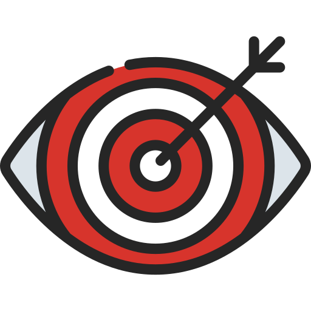

.png)

الرؤية
مبادرة تطوعية تهدف إلى دعم وتمكين المرأة والأسرة المصرية من خلال المشروعات، الفعاليات، والتوعية في مختلف المجالات، لضمان فرص متساوية وتعزيز دور المرأة في التنمية. تتماشى المبادرة مع الاستراتيجية الوطنية لتمكين المرأة 2030، وأهداف التنمية المستدامة، ورؤية مصر 2030، سعيًا لتمكين المرأة اقتصاديًا، سياسيًا، واجتماعيًا، وتنمية الأسرة المصرية لتحقيق مجتمع أكثر تقدمًاواستدامة.

الرسالة
تمكين المرأة المصرية وتعزيز قدراتها كركيزة أساسية لتقدم المجتمع، مع نشر الوعي بدورها كشريك متساوٍ في التنمية، وشمول التوعية للأسرة المصرية ككل، من خلال التنسيق والتعاون لتحقيق أهداف التمكين والتوعية.

الأهداف
- تنمية إمكانيات المرأة و بناء قدراتها كفرد و كمواطنة على المساهمة بدور فعال في مؤسسات المجتمع وفي ميادين العمل والأعمال كافة وعلى المشاركة في اتخاذ القرارات.
- تنمية الوعي بقضايا المرأة في جوانبها الاقتصادية و الاجتماعية والسياسية والثقافية والإعلامية.
- التأكيد على الدور المهم والفعال الذي تقوم به النساء في تنمية المجتمعات، وتقديم الدعم اللازم لهن في كافة المجالات وللاسرة المصرية ككل .
- تعزيز قدرة المرأة على مواجهة التحديات والظواهر الاجتماعية المستجدة على المجتمع المصري.
- ترسيخ القيم التي تؤصل للهوية الوطنية والمبنية على لغة التسامح والحوار لدى المرأة والاسرة المصرية .
الفئة المستهدفة
- الطالبات (13–18 عامًا): فئة مفعمة بالحيوية والفضول، في مرحلة التعلم واكتشاف الذات.
- السيدات (35–45 عامًا): فئة ناضجة بخبرة حياتية، قادرة على الإسهام الفعّال في المجتمع.
- الشابات (18–35 عامًا): فئة نشطة ومؤثرة، تجمع بين الطموح والابتكار وبناء المستقبل.